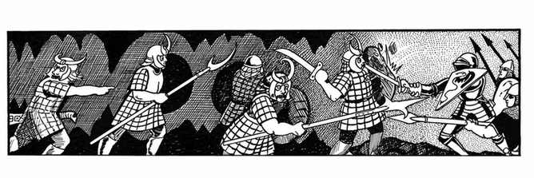

大地精 · Hobgoblin

| 项目 | 数据 |
|---|---|
| 出现频率 | 不常见 |
| 出现数量 | 20–200 |
| 护甲等级 | 5 |
| 移动力 | 9 寸 |
| 生命骰 | 1+1 |
| 在巢穴概率 | 25%；财宝 D、Q（×5） |
| 财宝类型 | 个体财宝 J、M |
| 攻击次数 | 1 次 |
| 攻击伤害 | 1–8 或按武器 |
| 特殊攻击 | 无 |
| 特殊防御 | 无 |
| 魔法抗性 | 标准 |
| 智力 | 一般 |
| 阵营 | 守序邪恶 |
| 体型 | M（身高约 6 尺半） |
| 灵能能力 | 无 |
大地精部落几乎随处可见；它们既适应阳光下的地表，也能在地下生活。它们能在明亮日光下正常作战，并有 60 尺红外视觉，可在完全黑暗中战斗。各部落都很看重自己的地位；两个部落相遇时，至少有 85% 概率互相嘲讽，另有 15% 概率直接开战，除非有强大的怪物、战士、邪恶高阶牧师等强势首领在场控制局势。若有机会，大地精也会欺凌附近的兽人或地精；大地精首领有时会被安排在地精或兽人军队中，约束士兵并驱使他们作战。
较为臭名昭著的大地精部族包括撕裂者、断腿者、碎颅者、剥肉者、吸髓者、剥皮者与慢杀者。
每群每有 20 名大地精，就有一名首领（军士）与两名助手；三人各有 9 点生命值。若遇到 100 名或更多大地精，还会有一名副酋长（护甲等级 3、生命值 16 点、伤害加值 +1+2，即每次造成 3–10 点伤害）。这些额外首领均按 3 颗生命骰生物战斗。在巢穴中还会有一名酋长与 5–20 名贴身护卫。酋长护甲等级 2、生命值 22 点、每次造成 2–11 点伤害，并按 4 颗生命骰生物战斗；贴身护卫与副酋长的护卫相同。巢穴中雌性与幼崽数量分别为雄性的 150% 与 300%。
大地精巢穴有 80% 位于地下，20% 位于地表。地表巢穴是带壕沟、土垒和石木栅栏的村庄，设有两座大门和 3–6 座瞭望塔，建筑通常由木材与石头混建。大地精喜欢在其他文明的遗址上建村，因此村庄有时会比上述描述更坚固，甚至拥有坚实的石墙、建筑或堡垒。每 50 名战士配备 2 架重型投石器、2 架轻型投石器与 1 架弩炮。地下巢穴有 60% 概率由 2–12 只食肉猿守卫。
大地精的典型武器配置如下：
| 武器组合 | 概率 |
|---|---|
| 剑与复合弓 | 20% |
| 剑与矛 | 10% |
| 剑与钉头锤 | 5% |
| 剑与鞭 | 5% |
| 长柄武器 | 30% |
| 矛 | 10% |
| 钉头锤 | 20% |
首领总是携带两件武器。副酋长有 20% 概率持有部族旗帜，酋长则必定持有。旗帜能鼓舞 6 寸内的大地精战士，使其攻击骰与士气（反应）骰均获得 +1 加值。
若附近有精灵，大地精会因极端仇恨而优先攻击精灵，不理会其他敌军。
大地精非常擅长采矿，有 40% 概率察觉新建结构、倾斜通道，甚至会移动的墙壁。
除自己的种族语与阵营语外，多数大地精还会说地精语、兽人语，以及食肉猿的粗浅语言；另有 20% 会说通用语。
外观。 大地精的粗毛皮肤从深红褐色到灰黑色不等，脸色鲜红或橙红。成年雄性的鼻子呈蓝红色，眼睛为黄色或深棕色，牙齿从黄白到脏黄色。大地精偏爱鲜艳的血色与黑皮革，武器保养得很好。它们寿命约 60 年。
科林斯 Koalinth。 这是有鳃的大地精海生种族，多数方面与陆地同族相似。它们住在浅水区的洞穴与海蚀洞中，使用适合海底环境的矛与长柄武器。科林斯只说大地精语与守序邪恶阵营语，以任何能捕获的生物为猎物。它们肤色较浅、面部绿色，手足有蹼。